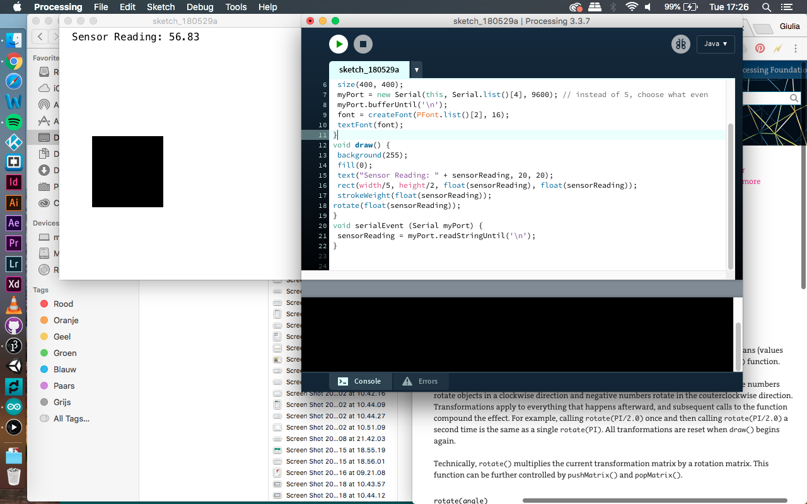

Opdracht 3
Voor deze opdracht moest een lichtje sneller knipperen dan het andere lichtje.
opdracht 4
Het ene lichtje moet faden terwijl het andere lichtje aangaat
opdracht 6
Hier moet door de petentiometer het ene lichtje aan gaan en de ander uit.
opdracht 7
Door de Light Dependent Resistor moet door de druk het lichtje uit gaan.
opdracht 8
Door de Light Dependent Resistor moet het vierkantje groter worden naarmaate druk wordt geplaatst.

opdracht 9
Door twee knopjes moet een knopje ervoor zorgen dat het lichtje aangaat en de ander niet.
opdracht 10
Het molentje moest op een ritmische manier van de ene naar de andere kant gaan.
opdracht 11
Door middel van een twee knopjes kan de propellors op het molentje bewegen. Het ene knopje naar de ene kant en het andere knopje andersom.
opdracht 12
Via een speakertje moest een zelfgemaakt deuntje ontwikkeld worden.
opdracht 13